Los Pocitos Azufrados es el destino de descanso y salud más especial de Cundinamarca. Lodos curativos, piscinas azufradas, restaurante típico y temazcal natural rodeados de naturaleza pura.
Los Pocitos Azufrados es un club de pasadía ubicada en Tocaima, Cundinamarca, famosa por sus aguas azufradas con propiedades terapéuticas únicas. Aquí la naturaleza, la tradición y el cuidado de la salud se unen para ofrecerte una experiencia inolvidable.
Contamos con piscinas de agua azufrada, tratamientos de lodoterapia, restaurante con cocina típica, temazcal natural, zonas de hamacas y senderos ecológicos. Pets friendly y apto para toda la familia. Somos pasadía — abiertos de jueves a domingo y festivos de 9 AM a 5 PM.
Lodos azufrados naturales — propiedades antiinflamatorias y relajantes reconocidas.
Restaurante típico — recetas tradicionales cundinamarquesas preparadas al momento.
Familia y Mascotas bienvenidas — espacios amplios y seguros para todos.
Solo 100 km de Bogotá — el escape perfecto para el fin de semana.
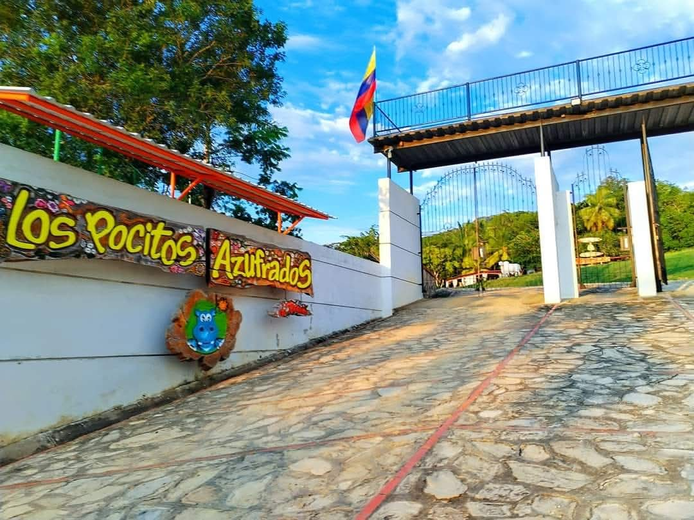
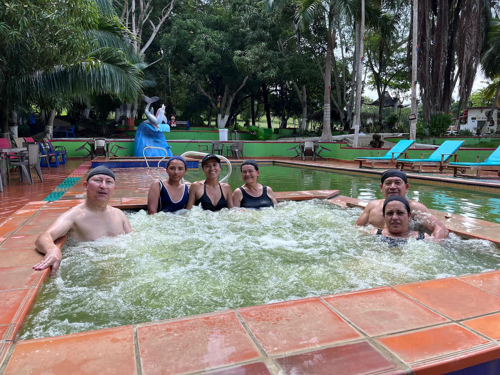
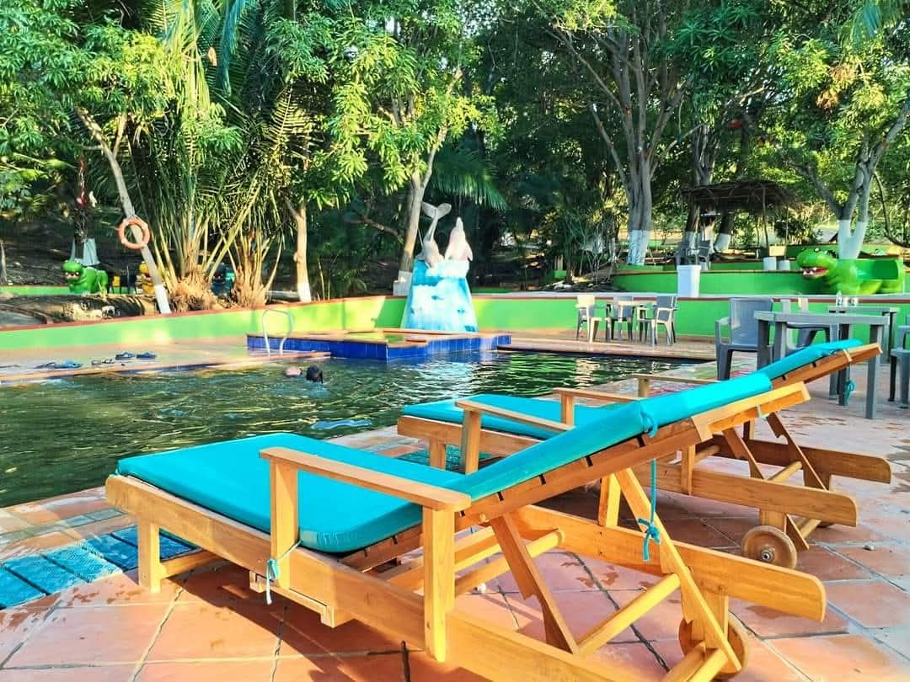
Todo lo que necesitas para descansar, sanarte y disfrutar en un solo lugar.
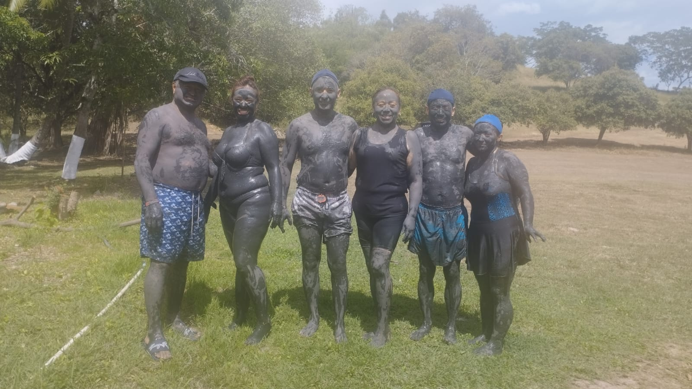
Aplícate el lodo azufrado que brota naturalmente del suelo de Tocaima en todo el cuerpo, déjalo actuar 30 minutos y siente cómo alivia artritis, dolores musculares, problemas de piel y estrés. Una experiencia terapéutica única en Colombia.
Disfruta de nuestras piscinas de agua azufrada a temperatura natural. Perfectas para relajarse y recibir los beneficios terapéuticos del agua mineral en familia.
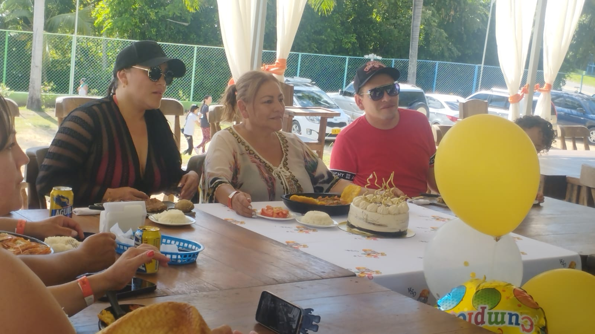
Cocina regional cundinamarquesa elaborada con productos frescos. Especialidades de la casa, pescados frescos, jugos naturales y mucho más para completar tu día.
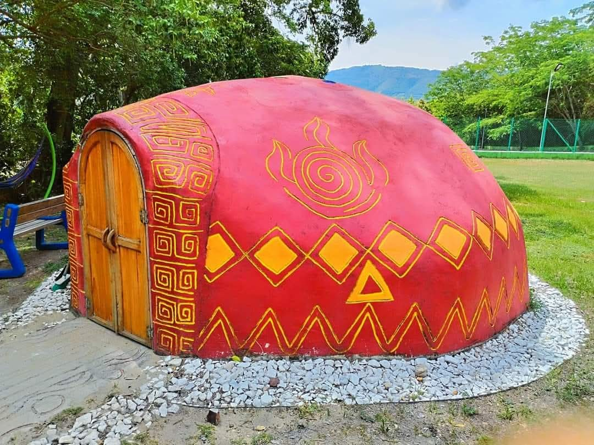
Experiencia de purificación ancestral en nuestra cabaña de vapor. El calor y las plantas medicinales limpian cuerpo y mente en una sesión guiada única en la region.
Todo lo que puedes disfrutar el día que nos visites, sin costos adicionales.
Nuestra piscina es 100% agua azufrada natural a temperatura ambiente — no son termales ni aguas calientes. El azufre viene directamente de la tierra y sus propiedades son reales: ayuda con la artritis, problemas de piel, manchas, granitos, inflamación muscular y mejora la circulación. Es normal que huela fuerte, especialmente cuando hay sol; eso es el azufre reaccionando con el calor y es completamente inofensivo.
En nuestra zona de lodo vas directamente a aplicarte el barro tu mismo: con tus manos te lo restriegas por todo el cuerpo y lo dejas actuar durante 30 minutos. En ese tiempo puedes caminar por la finca, hacer el sendero, descansar en la hamaca — tienes libertad total. Dos cosas importantes: no puedes acercarte a la piscina con el barro puesto (para mantener el agua limpia) y no entres a los baños con el lodo encima porque el piso se vuelve muy resbaloso.
Sus beneficios son reales y acumulativos: alivia la artritis, el reumatismo y dolores articulares; reduce la inflamación muscular; mejora la circulación sanguínea; estimula la producción de colágeno; elimina células muertas y toxinas; ayuda con granitos, manchas, eczema y problemas de piel. No cura todo en un solo día, pero cada visita suma. Pregunta al personal cómo aplicarlo según tu necesidad específica.
Incluye dos opciones: una caminata pavimentada de 5 minutos, tranquila y apta para cualquier persona; y la caminata ecológica hasta el alto de la montaña, donde puedes recorrer el sendero natural, disfrutar el paisaje y volver a bañar con el agua azufrada. Una experiencia de naturaleza completa.
Nuestro temazcal es un sauna natural hecho de barro, calentado por el sol de forma completamente orgánica — entre más sol haya ese día, más intenso será el calor adentro. Dentro se colocan piedras volcánicas sobre las que se hacen vaporizaciones de eucalipto y plantas medicinales, generando un vapor curativo 100% natural.
Sus beneficios son potentes: desintoxica el cuerpo eliminando hasta un litro de sudor con toxinas como ácido úrico y urea; limpia profundamente la piel; despeja las vías respiratorias; dilata los vasos sanguíneos y mejora la circulación; relaja músculos y articulaciones; y reduce significativamente el estrés y la ansiedad. Una sesión completa produce una relajación profunda comparable a horas de descanso. No pueden ingresar bebés ni personas con taquicardia, enfermedades cardiovasculares o presion arterial baja. Entra bien hidratado y sal si sientes mareo.
Precios de ingreso al club. El restaurante se cobra aparte según lo que consumas.
Menores de 7 años. Incluye acceso a piscinas azufradas, zona de lodos y caminata. Uso del gorro de natación obligatorio.
Acceso completo: piscina azufrada, lodoterapia, caminata ecológica, temazcal y zona de descanso. Uso del gorro de natación obligatorio.
Tu mascota puede acompañarte en las zonas permitidas del club, pero no puede ingresar a las zonas húmedas.
Conoce los espacios, las piscinas y los momentos que te esperan en Los Pocitos Azufrados.
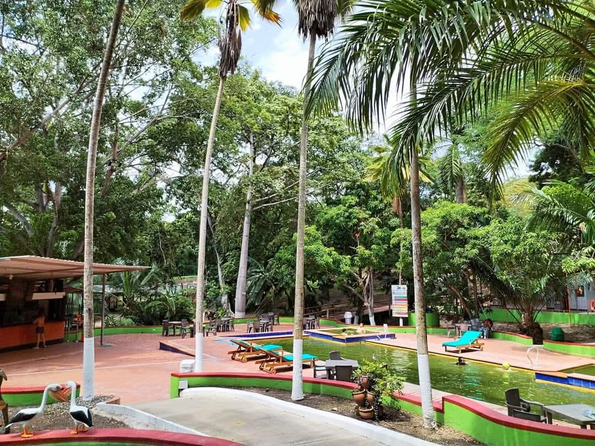
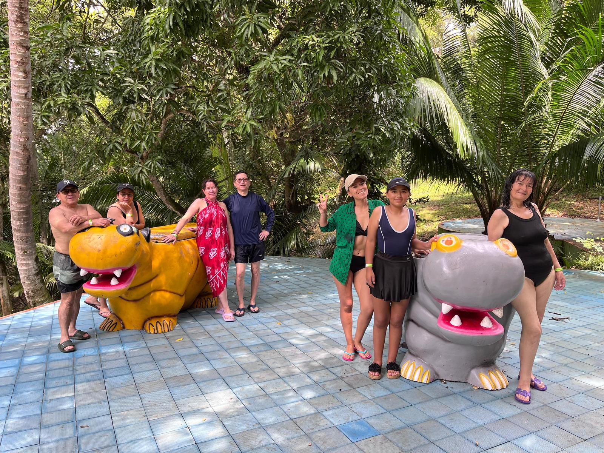
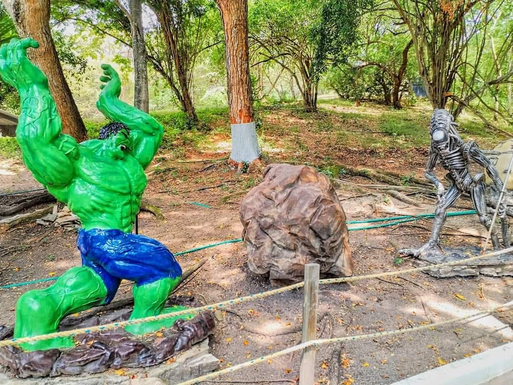
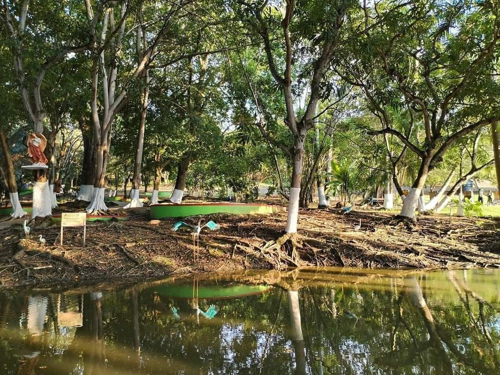
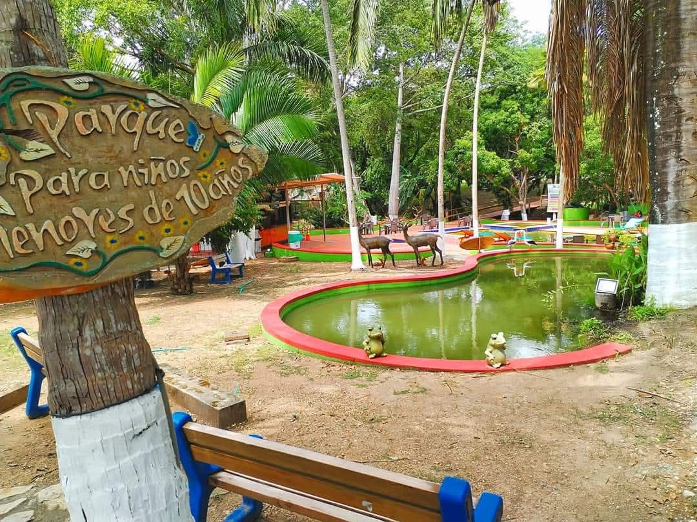
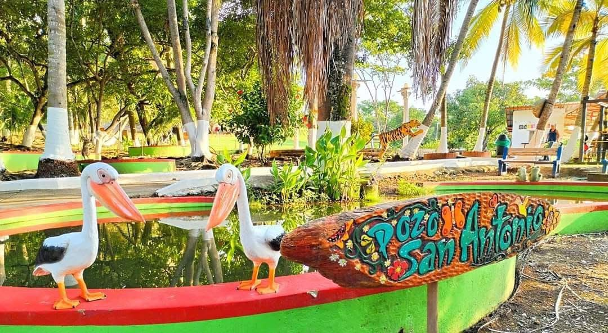
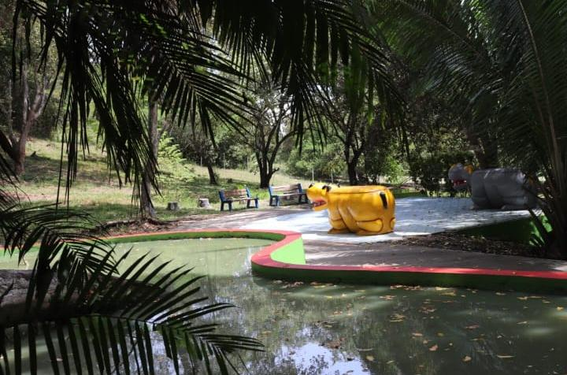
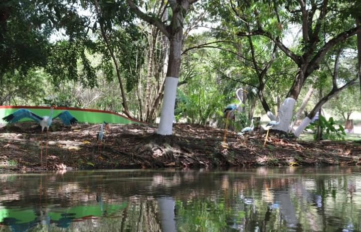
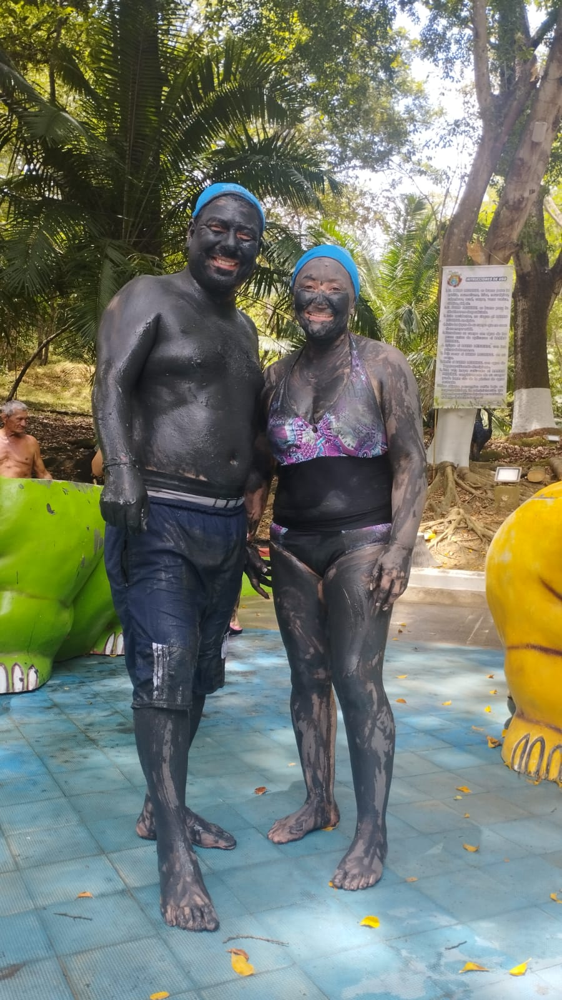
Opiniones reales de Google de quienes ya vivieron la experiencia Pocitos.
"Un lugar precioso para descansar, las piscinas con agua azufrada son muy relajantes y el personal muy amable. El restaurante con comida típica es delicioso, especialmente el pescado. Volvería sin dudarlo."
"Fuimos en familia y la pasamos genial. Los niños se divirtieron mucho en las piscinas y los adultos disfrutamos el lodo azufrado. La atención es muy buena y el precio muy razonable para todo lo que ofrecen."
"El mejor plan para salir de Bogotá. Las aguas azufradas tienen unos beneficios increíbles para la piel y el cuerpo. La gallina pocitos es una especialidad que no se puede perder. Lugar tranquilo y muy bien cuidado."
"Ver más opiniones en Google Maps y déjanos tu calificación si ya nos visitaste. Tu experiencia nos ayuda a mejorar y a que más familias colombianas nos conozcan."
Tu opinión nos ayuda a mejorar y a que más familias nos conozcan. Cuéntanos tu experiencia.
Te respondemos por WhatsApp y con tu permiso compartimos tu experiencia.
Las reseñas de Google son las más importantes para nosotros. Con 2 minutos nos ayudas un montón a que más gente nos encuentre.
Tip: Si ya nos calificaste en Google, compártenos la foto de tu visita por WhatsApp para que aparezcas en nuestra galería.
Estamos en Tocaima Cundinamarca km 3 via jerusalen, a solo 100 km de Bogotá por la vía Girardot.
Dirección
km 3 via jerusalen, Tocaima, Cundinamarca, Colombia
Telefono / WhatsApp
+57 310 650 3630
Horario de atención
Información importante para que tu visita sea perfecta desde el primer momento.
El uso del gorro de natación es obligatorio para ingresar a las piscinas. Si no tienes, puedes adquirir uno en la entrada. Sin gorro no se permite el acceso al agua.
La comida se prepara sobre pedido. Para garantizar tu plato, especialmente en grupos, recomienda pedirlo al llegar o con anticipacion en la zona del bar.
No se puede ingresar al club con alimentos ni bebidas comprados afuera. Contamos con restaurante y bar propio para atenderte durante toda tu visita.
Aceptamos transferencias bancarias y efectivo. Te recomendamos llevar efectivo como respaldo para cualquier imprevisto.
El agua azufrada puede oler fuerte, especialmente cuando hay mucho sol. Ese olor es el azufre natural reaccionando con el calor. Es completamente normal e inofensivo — es señal de que el agua es 100% natural y pura.
El temazcal no es apto para bebés ni para personas con taquicardia o problemas del corazón. Si tienes alguna condición de salud, consulta con tu médico antes de ingresar.
Te aplicas el barro con tus manos, restriegándolo por todo el cuerpo, y lo dejas 30 minutos. En ese tiempo puedes caminar por la finca. No te acerques a la piscina con barro (ensucia el agua) y evita los baños (el piso se pone muy resbaloso). Si tienes dudas sobre cómo aplicarlo según tu condición, pregunta al personal.
Las mascotas pueden acompañarte en las zonas permitidas del club, pero no pueden ingresar a las zonas húmedas.
Completá el formulario y te contactamos por WhatsApp para confirmar tu reserva.
WhatsApp
+57 310 650 3630
Respondemos de lunes a domingo
Ubicación
Tocaima, Cundinamarca, Colombia
100 km de Bogotá por la vía Girardot
Horario
Jueves a domingo y festivos: 9 AM - 5 PM
Lun, Mar, Mié: Cerrado
Mascotas bienvenidas
Nuestras instalaciones son pet friendly.
Consulta condiciones de ingreso.